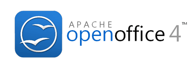
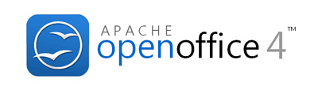
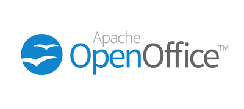
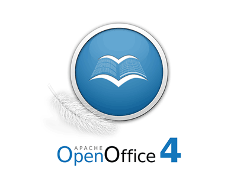
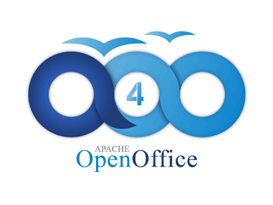

A quick update on our recent logo survey for Apache OpenOffice 4.0. We called on community members to submit proposals for a new project logo. The response was huge. We received over 40 logo proposals. To narrow down the choices we sought out feedback from users. We created a survey asking users to rate each logo on a 5-point scale, from Strongly Dislike to Strongly Like, as well as give an optional comment on each logo. The survey ran for one week and 5028 responses were received. Full details of the results can be found in the Apache OpenOffice Logo Survey Report. In this blog post we want to highlight some of the highest scoring logos, recognize the designers, and talk about next steps.
Samer Mansour, a software developer and an engaged citizen in his community in Toronto, aimed for "simple and flat" with his designs, "I had an a-ha moment when I saw another volunteer's flat logo. I had learned from design experts at work that thin font is the trend and is appealing to users, so I narrowed it down to put together a wordmark from an Apache licensed font that fit the bill."
Two of the top-scoring logo proposals came from Kevin Grignon, an OpenOffice contributor and a user experience designer with over 15 years experience designing user interfaces and application graphics. In his submissions, Kevin aimed to leverage some aspects of the existing branding, while modifying and enhancing other elements. As he explains, "Given the large number of graphic assets that would require updating in a refresh, my submissions retain familiar and recognizable elements including the orb element and logo type layout, which would allow a scaled rollout of the new logo. Other elements of the logo submissions were enhanced, including the curvature of the document/gulls or the use of a a stylized feather, a colour palette which harmonizes well with proposed individual product icons, the use of a globe element, and logo type colouring which emphasizes the word "open" - which is our differentiator."
 
Michael Acevedo is a college student studying Aviation technology in Florida, how humans and technology interact while the aircraft is in operation and finding ways to improve that relationship. He explains his design process as, "I aimed in the design of the new AOO 4 logo for something that was simple (hence why I went with a non capitalized design for the OpenOffice name) yet being something refreshing to reflect the rebirth of Apache OpenOffice. The challenge was how to create a logo that could reflect that philosophy yet being respectful and familiar to the outgoing Apache OpenOffice logo. Taking that into account, my proposed designs offer just that, something refreshing and simple, while at the same time staying true to the brand and image that has made OpenOffice their default office suite for the last 13 years or so."

You can see the top scoring design above, by Chris Rottensteiner, a webworker and genetic genealogist from South Tyrol in the Alps. He supports the free digital data flow and open elaboration trough FOSS software. "I'm a clean flat style fan and tried to make something without glossy or other "modish" elements: the brand should speak for itself. For this second and much better proposal from me I got inspired by Kevin Grignon and the Source Sans Pro font. If the consensus is v4 should receive a logo built on the existing version, I would be happy to work on possible improvements. P.S.: the work was done in Inkscape (SVG), a piece of software I love."

This design, and the next one, although they were not top scorers when measured by average score, were the logos that received the most number of "Strongly Like" selections. So they had more enthusiastic support than the other logos. The above design, from Robin Fowler, takes the traditional gulls element of the OpenOffice.org logo and makes them dynamic, while also suggesting the form of an open book. In Robin's words, "My goal for the logo was to take the traditional elements of the OpenOffice logo and give it more of a connection to the software itself. I kept the sphere similar to the original, adding a border to make it look more like an app icon. My initial idea was to take the birds and use them to form a book. The first attempts were fairly crude but I got some valuable feedback from the mailing list and managed to improve it somewhat. The feather was added to resemble the new 'Apache era' of OpenOffice."

Vasilis Xenofontos, a visionary art designer from the small island of Cyprus aimed for a modern and easy to remember logo design. "I did this design trying to show that OpenOffice will be here forever and that’s why the logo has the infinity circles in it forming the letters AOO. The two colors in it symbolize the sea and the sky showing that this software is free and all over the world."
So what are the next steps in this logo exploration? The designers of the above logos have been invited to review user comments from the survey and based on that feedback submit revised logos. We'll then review the revisions, discuss and pick the new logo. As usual at Apache we try to reach consensus by discussion wherever possible, and only vote if necessary. The above logos already show a good deal of sharing of ideas. The constructive feedback among the designers and the Apache OpenOffice community should lead us to a wonderful new logo for a wonderful new release, Apache OpenOffice 4.0.
Congratulations, obviously, to the top logos, but thanks go out to all those who contributed logos for consideration, as well as to the 5000 users who took time to rate and comment on these designs.